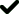
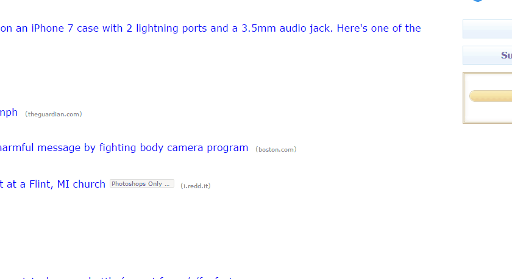

בעת לחיצה על כפתור התוסף (), תופענה האפשרויות הבאות:

כפתור "Login Safely" מציג לך את רשימת האתרים הבטוחים שלך. לחיצה על אתר מרשימה זו תעביר אותך אל האתר המבוקש, אלא אם כן אתה כבר נמצא באתר זה.
מנגנון זה מאד שימושי כנגד התקפות פישינג, מכיוון שאם אתה נמצא באתר מתחזה, אך לא מצליח להחליט האם זה אתר פישינג או האתר המקורי - לחיצה על הקישור לאתר ברשימת האתרים הבטוחים תוכל לעזור לך לקבל את ההחלטה הנכונה.

כפתור "Mark site as Trusted" מאפשר לך כמשתמש להוסיף את האתר הנוכחי שבו אתה נמצא לרשימת האתרים הבטוחים שלך.
ההתחברות לאתרים אלה תיעשה בתהליך התחברות בטוח כפי שנלמד בשלב האימון.
כלומר, תהליך ההתחברות הבטוח יבוצע באמצעות בחירת התמונה הייחודית שלך, אשר בחרת בשלב האימון, מתוך 4 תמונות שיוצגו לך לפני דף ההתחברות לאתר המבוקש.
להזכירך, זאת היא התמונה אשר בחרת:

שים לב: אם הינך עומד להתחבר לאתר אשר נמצא ברשימה הבטוחה, ולא ביצעת את תהליך ההתחברות הבטוח, זה אומר שאתה נמצא באתר פישינג מתחזה. אנא דווח לנו על כך באמצעות הכפתור "Mark site as Suspect" שבתפריט של Shark-King.
לנוחיותך, האתרים הבאים כבר נמצאים ברשימת האתרים הבטוחים:
- Facebook
- Gmail
- Lemida (עבור סטודנטים מבר-אילן)
כאשר אתה גולש באתר אשר נמצא ברשימת האתרים הבטוחים, כפתור התוסף ישנה את צבעו לירוק ().

כפתור "Settings" מאפשר לך לצפות ברשימת האתרים הבטוחים וברשימת האתרים החשודים שלך. כמו כן, באפשרותך להוסיף או להסיר אתרים מרשימות אלה במסך ההגדרות.

כפתור "Mark site as Suspect" מאפשר לך כמשתמש לחסום ולדווח לנו על האתר הנוכחי שבו אתה נמצא כאתר פישינג חשוד. במידה ותבקר שוב באתר זה, תוצג לך הודעה כי אתר זה נחסם. אם ברצונך להמשיך לגלוש באתר זה, על אף שבעבר חסמת אותו, יוצג לך כפתור המאפשר זאת.

כפתור "Report Suspect Ad" מאפשר לך כמשתמש לחסום ולדווח לנו על פרסומת אשר נראית חשודה באתר שבו אתה נמצא.
טיפ קטן! לנוחיותך, באפשרותך לסמן אתרים ופרסומות באמצעות לחיצת לחצן-ימני על העכבר, כדלהלן:


לחיצה על כפתור "Tip" תפתח עבורך חלון עם טיפים מגוונים על דרכי הגנה מפני התקפות פישינג. לחיצה על כפתור זה תעשיר את הידע שלך בנושא פישינג והתקפות אינטרנט. מומלץ!

כפתור "Test Me" יאפשר לך לבדוק את הידע שלך על התקפות פישינג באופן מעשי. לחיצה על כפתור זה תפעיל התקפת פישינג בתוך 24 השעות הקרובות. מומלץ בחום!

כפתור "Contact" מאפשר לך ליצור איתנו קשר בכל עניין, כגון: הצעות לשיפור, בעיות טכניות ועוד.

כפתור
"Share with friends!" מאפשר לך להמליץ לחבריך על תוסף Shark-King, כדי לאפשר גם להם ליהנות מלמידה חשובה ומעניינת בנושא התקפות פישינג.